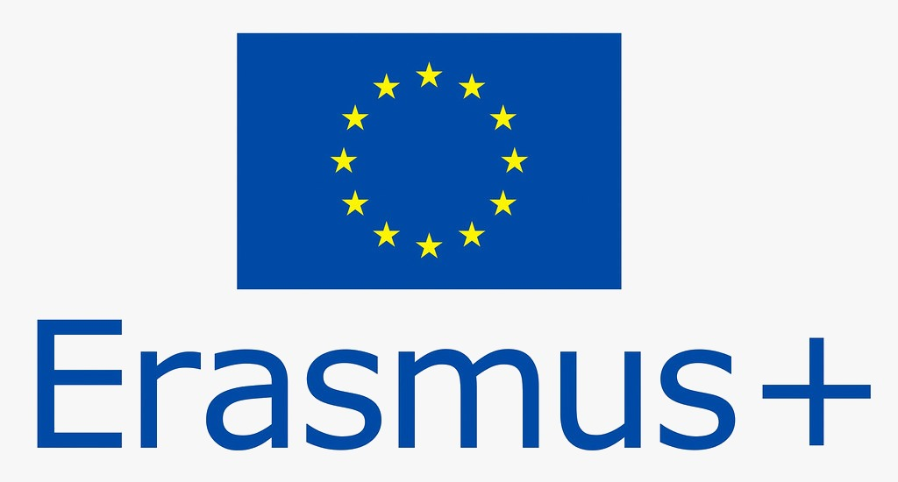
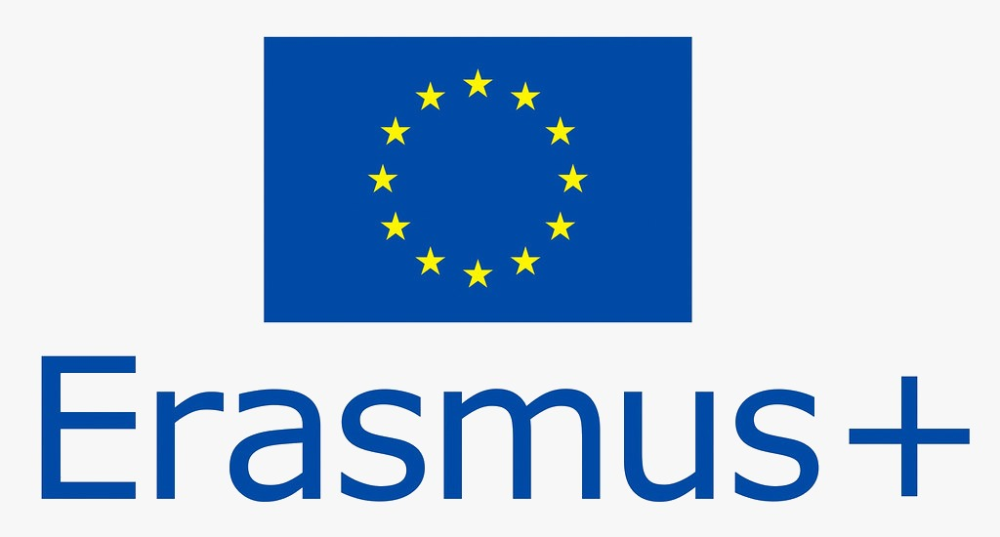

Welcome!

My name is Stanciu Andrei, I am 18 years old and I am a student at the "Nicolae Titulescu" Pucioasa National College. I am a very active person, whose main hobby is cycling. The IT field has always been a great interest for me, managing to learn several programming languages on my own. The Erasmus KA1 project was a great opportunity to raise my knowledge of the hardware of a PC. I am a person who loves everything that is beautiful, so the views from Portugal managed to impress me every time.
My name is Deak Dănuț, I am 18 years old and I am a student at the "Nicolae Titulescu" Pucioasa National College on the mathematics-informatics profile. I am an active person, eager to discover new things every day and to improve their skills on every occasion. Personal but also professional development are topics of great interest to me, so the Erasmus KA1 project provided me with a solid foundation in terms of a potential career in IT. I have a very strong desire to be the best version of myself every day, so I try to learn something that can broaden my horizons of knowledge every day.